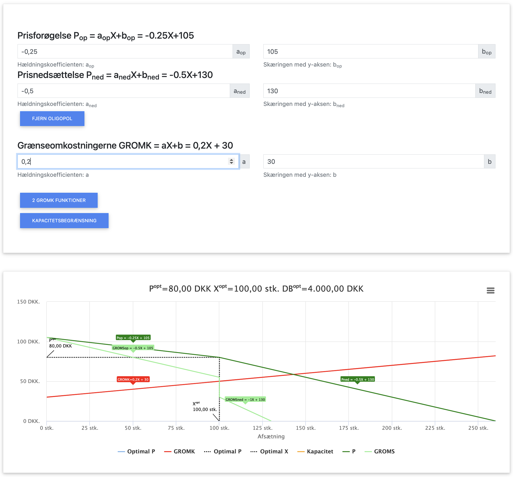
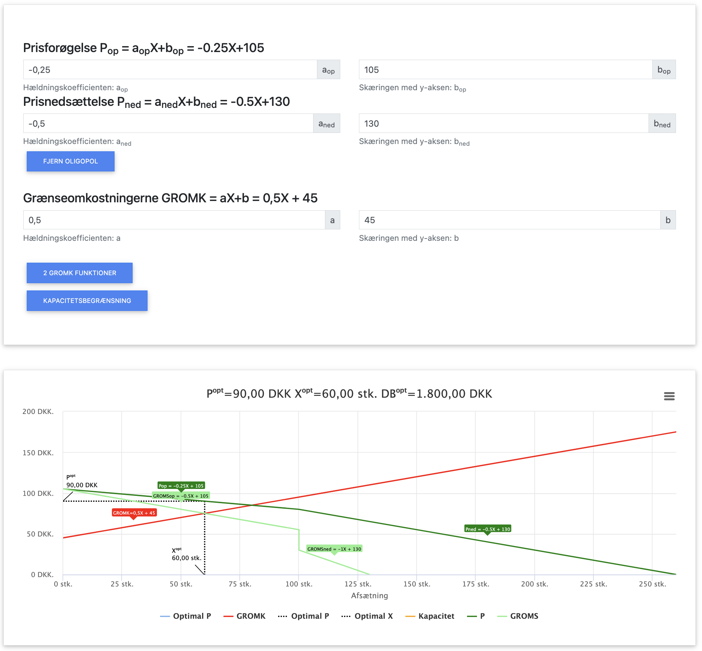

Oligopol

Oligopol er en markedsform, hvor der kun er få store virksomheder, der dominerer markedet. Disse virksomheder er indbyrdes afhængige, hvilket betyder at hver virksomheds handlinger direkte påvirker de andre virksomheders situation. Dette skaber en strategisk interaktion, hvor virksomhederne konstant må overveje konkurrenternes mulige reaktioner.
I dette kapitel fokuserer vi særligt på oligopol med en knækket efterspørgselskurve, som beskriver en asymmetrisk reaktion fra konkurrenter: de følger med ned i pris, men ikke op i pris.
I dette kapitel benytter vi følgende forkortelser:
- P = Pris
- X = Mængde
- OMS = Omsætning (P × X)
- VO = Variable omkostninger (VE × X)
- FO = Faste omkostninger
- VE = Variable enhedsomkostninger (VO / X)
- GROMS = Grænseomsætning (OMS' = ændring i omsætning ved ændring i afsat mængde X)
- GROMK = Grænseomkostninger (TO' = ændring i totale omkostninger ved ændring i afsat mængde X)
- DB = Dækningsbidrag (OMS - VO)
- TO = Totale omkostninger (FO + VO)
- TE = Totale enhedsomkostninger (TO / X)
I dette kapitel fokuserer vi på:
- Den knækkede efterspørgselskurve og dens betydning for oligopolvirksomheder
- Asymmetrisk konkurrentadfærd og forskellig priselasticitet ved prisstigninger og prisfald
- Optimering under oligopol med knækket efterspørgselskurve
- "Sticky prices" og prisrigiditet i oligopolmarkeder
- Et gennemgående beregningseksempel
Grundlæggende principper for oligopol
Under oligopol gælder følgende principper:
- Få store virksomheder dominerer markedet
- Indbyrdes afhængighed mellem konkurrenter
- Produkterne kan være homogene eller differentierede
- Betydelige adgangsbarrierer beskytter de etablerede virksomheder
- Virksomhederne er prissættere, men er begrænset af konkurrenternes reaktioner
Den knækkede efterspørgselskurve
Den knækkede efterspørgselskurve er en model, der beskriver prissætning i oligopolmarkeder. Modellen bygger på to grundlæggende antagelser om konkurrenternes adfærd:
- Ved prisstigninger: Konkurrenterne følger ikke med op i pris. Dette resulterer i et stort fald i efterspørgslen efter virksomhedens produkt, da mange kunder vil skifte til konkurrenternes nu relativt billigere produkter. Efterspørgselskurven er derfor meget elastisk (flad) over knækket.
- Ved prisfald: Konkurrenterne følger hurtigt med ned i pris for ikke at miste markedsandele. Dette resulterer i en relativt lille stigning i efterspørgslen, da konkurrenterne også sænker deres priser. Efterspørgselskurven er derfor mindre elastisk (stejl) under knækket.
Knækket i efterspørgselskurven ligger ved den nuværende markedspris (P₀), som ofte er en form for stiltiende overenskomst mellem de dominerende virksomheder.
Konsekvenser af den knækkede efterspørgselskurve
Den knækkede efterspørgselskurve har flere vigtige konsekvenser for oligopolvirksomheder:
1. Prisrigiditet ("sticky prices")
Virksomheder er tilbageholdende med at ændre deres priser, selv ved mindre ændringer i omkostninger. Dette skyldes at:
- Prisstigninger er meget risikable, da de fører til stort tab af efterspørgsel hvis konkurrenter ikke følger med
- Prisfald er ofte ikke profitable, da konkurrenter hurtigt følger med ned, hvilket reducerer den potentielle gevinst i markedsandele
2. Diskontinuert grænseomsætningskurve (GROMS)
På grund af knækket i efterspørgselskurven opstår der et fald i grænseomsætningskurven. Dette betyder, at der er et interval, hvor GROMS-kurven er lodret, og hvor små ændringer i produktionsmængden ikke påvirker den optimale pris.
3. Forskellig priselasticitet
Priselasticiteten er markant forskellig over og under knækpunktet:
- Over knækket (ved prisstigninger): Høj priselasticitet | εₚ | > 1
- Under knækket (ved prisfald): Lav priselasticitet | εₚ | < 1
Optimering under oligopol med knækket efterspørgselskurve
For at forstå optimering under oligopol, skal vi først se på, hvordan den knækkede efterspørgselskurve påvirker grænseomsætningen (GROMS):
Konsekvens for grænseomsætningen:
Den knækkede efterspørgselskurve skaber en diskontinuert grænseomsætningskurve med et fald i GROMS ved den mængde, der svarer til knækpunktet på efterspørgselskurven.
Dette betyder at:
- GROMS-kurven har to segmenter, som ikke er forbundne
- Hvis GROMK-kurven skærer GROMS-kurven i dette "hul", er den optimale produktion og pris stabilt ved knækpunktet, selv om GROMK ændrer sig inden for et vist interval
Optimeringsreglen:
Ligesom ved andre markedsformer optimerer virksomheden hvor GROMS = GROMK. Men på grund af diskontinuiteten i GROMS-kurven gælder:
- Hvis GROMK skærer i det øvre segment af GROMS: Optimal produktion er mindre end knækpunktet
- Hvis GROMK skærer i det nedre segment af GROMS: Optimal produktion er større end knækpunktet
- Hvis GROMK ligger i hullet mellem de to segmenter: Optimal produktion er netop ved knækpunktet
Gennemgående beregningseksempel
Lad os arbejde med et konkret eksempel på en virksomhed, der opererer i et oligopolmarked med en knækket efterspørgselskurve:
Forudsætninger:
- Nuværende markedspris (P₀) = 80 kr.
- Nuværende produktionsmængde (X₀) = 100 enheder
- Efterspørgselsfunktion over knækpunktet (P > P₀): P = -0,25X + 105
- Efterspørgselsfunktion under knækpunktet (P < P₀): P=-0,5X + 130
- Variable enhedsomkostninger (VE) = 0,1X + 30 kr. pr. enhed
- Faste omkostninger (FO) = 2.000 kr.
Bemærk: Ved knækpunktet (P₀ = 80, X₀ = 100) skal de to efterspørgselsfunktioner give samme værdi:

Her ses løsningen på opgaven i appen.
App beregning af oligopol
Trin 1: Konstruér den knækkede efterspørgselskurve og beregn grænseomsætningen
Vi skal opstille grænseomsætningen (GROMS) for begge segmenter af efterspørgselskurven:
Over knækpunktet (P > P₀):
Efterspørgselsfunktion: P = -0,25X + 105
Omsætningsfunktion: OMS = P × X = (-0,25X + 105) × X = -0,25X² + 105X
Grænseomsætning: GROMSop = den afledte af OMS med hensyn til X = -0,5X + 105
Dette gælder for X < 100
Ved X₀ = 100: GROMSop = -0,5 × 100 + 105 = -50 + 105 = 55 kr.
Under knækpunktet (P < P₀):
Efterspørgselsfunktion: P = -0,5X + 130
Omsætningsfunktion: OMS = P × X = (-0,5X + 130) × X = -0,5X² + 130X
Grænseomsætning: GROMSned = den afledte af OMS med hensyn til X = -X + 130
Dette gælder for X > 100
Ved X₀ = 100: GROMSned = -1 × 100 + 130 = -100 + 130 = 30 kr.
Diskontinuiteten i GROMS-kurven:
Ved X₀ = 100 har vi et spring i GROMS-kurven fra GROMSop = 55 kr. til GROMSned = 30 kr.
Dette betyder, at der er et interval fra 30 kr. til 55 kr., hvor GROMS-kurven har et hul.
Bestemmelse af knækpunktet hvis det ikke er oplyst
I ovenstående eksempel fik vi oplyst knækpunktet (X₀ = 100, P₀ = 80), men i praksis skal dette punkt ofte beregnes. Her er fremgangsmåden:
Metode til bestemmelse af knækpunktet:
Når vi har to efterspørgselsfunktioner - én over knækpunktet og én under knækpunktet - finder vi knækpunktet ved at løse ligningssystemet, hvor de to funktioner skærer hinanden.
Med efterspørgselsfunktionerne:
Pop = -0,25X + 105 (over knækpunktet, her er b altid mindst)
Pned = -0,5X + 130 (under knækpunktet, her er b altid størst)
Beregning af knækmængde (X₀):
Vi sætter Pop = Pned og løser for X:
-0,25X + 105 = -0,5X + 130
-0,25X + 0,5X = 130 - 105
0,25X = 25
X₀ = 25 × 4 = 100 enheder
Beregning af knækpris (P₀):
Vi indsætter X₀ = 100 i en af efterspørgselsfunktionerne:
P₀ = -0,25 × 100 + 105 = -25 + 105 = 80 kr.
Vi kan verificere ved at indsætte i den anden funktion:
P₀ = -0,5 × 100 + 130 = -50 + 130 = 80 kr.
Begge funktioner giver samme pris ved X₀ = 100, hvilket bekræfter vores beregning af knækpunktet (X₀ = 100, P₀ = 80).
Trin 2: Beregn grænseomkostninger (GROMK)
Nu beregner vi grænseomkostningerne for at sammenligne med grænseomsætningen:
Variable enhedsomkostninger: VE = 0,1X + 30
GROMK ud fra VO og TO
Variable omkostninger: VO = VE × X = (0,1X + 30) × X = 0,1X² + 30X
Totale omkostninger: TO = FO + VO = 0,1X² + 30X + 2.000
GROMK = den afledte af TO med hensyn til X = 0,2X + 30
Bemærk: Ligesom i de andre kapitler ser vi, at når VE er en lineær funktion (VE = aX + b), så er GROMK = 2aX + b. Det betyder at GROMK har en hældning der er dobbelt så stejl som VE's hældning.
Ved X₀ = 100:
GROMK = 0,2 × 100 + 30 = 20 + 30 = 50 kr.
Trin 3: Undersøg om den nuværende pris og mængde er optimal
Vi har nu beregnet:
- GROMSop = 55 kr. (over knækpunktet)
- GROMSned = 30 kr. (under knækpunktet)
- GROMK = 50 kr. ved X = 100
Analyse:
Vi kan se at 50 kr. ligger i intervallet mellem 30 kr. og 55 kr., hvilket betyder at GROMK ligger i "hullet" i GROMS-kurven.
Dette er en perfekt illustration af prisrigiditet i oligopolmarkeder med knækket efterspørgselskurve. Når GROMK ligger i "hullet" mellem GROMSop og GROMSned, er der ingen incitament til at ændre produktionen:
- At øge produktion er ikke attraktivt, da GROMK (50 kr.) > GROMSned (30 kr.)
- At mindske produktionen er heller ikke attraktivt, da GROMK (50 kr.) < GROMSop (55 kr.)
Virksomheden vil derfor blive ved knækpunktet (X₀ = 100, P₀ = 80), selv ved mindre ændringer i omkostninger.
Trin 4: Undersøg stabilitet ved knækpunktet
Ved knækpunktet (X₀ = 100, P₀ = 80) har vi:
- GROMSop = 55 kr. (øvre grænse for "hullet")
- GROMSned = 30 kr. (nedre grænse for "hullet")
- GROMK = 50 kr.
Analyse af stabilitet:
GROMK = 50 kr. ligger i intervallet mellem 30 kr. og 55 kr. Dette betyder, at den nuværende situation er stabil og matematisk optimal. Virksomheden har intet incitament til at ændre sin produktion.
Hvor stabil er situationen?
Så længe GROMK forbliver i intervallet mellem 30 kr. og 55 kr., vil virksomheden fortsætte med at producere ved knækpunktet. Dette illustrerer den såkaldte "prisrigiditet" i oligopolmarkeder.
GROMK kan ændre sig med ±5 kr. før der vil være incitament til at ændre produktionen:
- Hvis GROMK stiger til over 55 kr., vil virksomheden have incitament til at reducere produktionen
- Hvis GROMK falder til under 30 kr., vil virksomheden have incitament til at øge produktionen
Trin 5: Beregn resultat ved knækpunktet
Lad os beregne resultatet ved at forblive på knækpunktet (X₀ = 100, P₀ = 80):
Omsætning:
OMS = P₀ × X₀ = 80 × 100 = 8.000 kr.
Variable enhedsomkostninger ved X₀ = 100:
VE = 0,1 × 100 + 30 = 10 + 30 = 40 kr. pr. enhed
Variable omkostninger:
VO = VE × X₀ = 40 × 100 = 4.000 kr.
Dækningsbidrag:
DB = OMS - VO = 8.000 - 4.000 = 4.000 kr.
Resultat:
Resultat = DB - FO = 4.000 - 2.000 = 2.000 kr.
Virksomheden opnår dermed et overskud på 2.000 kr. ved at producere 100 enheder til prisen 80 kr.
Opsummering af eksemplet
| Parameter | Knækpunktet |
|---|---|
| Produktionsmængde (X) | 100 enheder |
| Pris (P) | 80 kr. |
| Omsætning (OMS) | 8.000 kr. |
| Variable enhedsomkostninger (VE) | 40 kr. |
| Variable omkostninger (VO) | 4.000 kr. |
| Dækningsbidrag (DB) | 4.000 kr. |
| Resultat | 2.000 kr. |
| GROMS | GROMSop = 55 kr. / GROMSned = 30 kr. (diskontinuert) |
| GROMK | 50 kr. |
Prisrigiditet og realtilpasning
Den knækkede efterspørgselskurve forklarer, hvorfor priser ofte forbliver stabile i oligopolmarkeder, selv når omkostninger eller efterspørgsel ændrer sig:
Prisrigiditet ("sticky prices"):
Så længe GROMK-kurven krydser GROMS-kurven i "hullet" (mellem 30 kr. og 55 kr. i vores eksempel), er der ingen grund til at ændre pris eller mængde. Dette skaber et interval, hvor omkostningerne kan ændre sig uden at påvirke den optimale pris.
Realtilpasning frem for pristilpasning:
I stedet for at ændre priser reagerer oligopolvirksomheder ofte ved at justere andre faktorer:
- Produktkvalitet
- Serviceydelser
- Leveringsbetingelser
- Garantier
- Reklame og markedsføring
Disse justeringer giver virksomhederne mulighed for at konkurrere uden at starte en potentielt ødelæggende priskrig.
Alternativt eksempel: Højere grænseomkostninger
Lad os se på samme oligopolmarked, men med en anden omkostningsstruktur, hvor grænseomkostningerne er betydeligt højere:
Forudsætninger:
- Samme efterspørgselsfunktioner som før:
- Efterspørgselsfunktion over knækpunktet (P > P₀): P = -0,25X + 105
- Efterspørgselsfunktion under knækpunktet (P < P₀): P=-0,5X + 130
- Men nu med højere grænseomkostninger: GROMK = 0,5X + 45

Her ses løsningen på det alternative eksempel i appen.
App beregning af oligopol
Analyse ved knækpunktet (X₀ = 100):
Med de nye grænseomkostninger har vi ved X₀ = 100:
GROMK = 0,5 × 100 + 45 = 50 + 45 = 95 kr.
GROMSop = 55 kr.
GROMSned = 30 kr.
Vi kan se at 95 kr. er højere end både 55 kr. og 30 kr., hvilket betyder at GROMK ligger over "hullet" i GROMS-kurven. Dette indikerer at det nu er optimalt at reducere produktionen.
Beregning af optimal produktionsmængde:
For at finde den optimale mængde sætter vi GROMSop = GROMK:
-0,5X + 105 = 0,5X + 45
-0,5X - 0,5X = 45 - 105
-X = -60
X = 60 enheder
Den optimale pris bliver:
P = -0,25 × 60 + 105 = -15 + 105 = 90 kr.
Fortolkning:
Med de højere grænseomkostninger er det nu optimalt for virksomheden at reducere produktionen fra 100 til 60 enheder og hæve prisen fra 80 kr. til 90 kr.
Dette eksempel viser, hvordan betydelige ændringer i omkostningsstrukturen (hvor GROMK kommer ud af "hullet") kan føre til at virksomheden forlader knækpunktet og justerer sin pris og produktionsmængde.
Sammenligning af de to situationer:
I det oprindelige eksempel (GROMK = 0,2X + 30) lå grænseomkostningerne på 50 kr. ved knækpunktet, hvilket var i "hullet" mellem GROMSop = 55 kr. og GROMSned = 30 kr., og førte til en stabil situation.
I dette eksempel (GROMK = 0,5X + 45) er grænseomkostningerne 95 kr. ved knækpunktet, hvilket er højere end både GROMSop og GROMSned, og derfor fører til et skifte i den optimale strategi.
Beregning af resultat ved den optimale mængde X = 60:
Omsætning: OMS = P × X = 90 × 60 = 5.400 kr.
For at beregne de variable omkostninger, skal vi først finde VE-funktionen ud fra GROMK-funktionen.
Når GROMK = 0,5X + 45 og GROMK = den afledte af VO med hensyn til X, kan vi udlede at:
VO = 0,25X² + 45X (integration af GROMK med hensyn til X)
VE = VO/X = 0,25X + 45 kr. pr. enhed
Ved X = 60:
VE = 0,25 × 60 + 45 = 15 + 45 = 60 kr. pr. enhed
VO = VE × X = 60 × 60 = 3.600 kr.
Dækningsbidrag: DB = OMS - VO = 5.400 - 3.600 = 1.800 kr.
Resultat = DB - FO = 1.800 - 2.000 = -200 kr.
Med de højere grænseomkostninger opnår virksomheden faktisk et underskud på 200 kr., selv ved den optimale produktionsmængde på 60 enheder. Dette illustrerer, hvordan betydelige omkostningsstigninger kan ændre markedsdynamikken drastisk.
Sammenligning af de to eksempler
| Parameter | Oprindeligt eksempel | Alternativt eksempel |
|---|---|---|
| GROMK-funktion | 0,2X + 30 | 0,5X + 45 |
| VE-funktion | 0,1X + 30 | 0,25X + 45 |
| Optimal produktionsmængde (X) | 100 enheder (knækpunktet) | 60 enheder |
| Optimal pris (P) | 80 kr. | 90 kr. |
| Omsætning (OMS) | 8.000 kr. | 5.400 kr. |
| Variable enhedsomkostninger (VE) | 40 kr. | 60 kr. |
| Variable omkostninger (VO) | 4.000 kr. | 3.600 kr. |
| Dækningsbidrag (DB) | 4.000 kr. | 1.800 kr. |
| Faste omkostninger (FO) | 2.000 kr. | 2.000 kr. |
| Resultat | 2.000 kr. (overskud) | -200 kr. (underskud) |
| GROMK ved knækpunktet | 50 kr. (i hullet) | 95 kr. (over hullet) |
| Prisrigiditet | Ja (stabil ved knækpunktet) | Nej (justerer produktion og pris) |
Sammenligningen illustrerer, hvordan omkostningsstrukturen har afgørende betydning for virksomhedens optimale strategi:
- I det oprindelige eksempel er det optimalt at forblive ved knækpunktet, hvilket giver et overskud på 2.000 kr.
- I det alternative eksempel med højere grænseomkostninger er det optimalt at reducere produktionen og hæve prisen, men virksomheden opnår alligevel et underskud på 200 kr.
- Dette viser, hvordan betydelige omkostningsstigninger kan tvinge virksomheder i oligopolmarkeder til at forlade deres prisfaste adfærd og foretage prisjusteringer, selv hvis det medfører risiko for negative reaktioner fra konkurrenterne.
Sammenfatning af kapitlet
Oligopol med en knækket efterspørgselskurve er karakteriseret ved asymmetrisk konkurrentadfærd: konkurrenter følger med ned i pris, men ikke op i pris. Dette fører til:
Nøgleobservationer:
- En knækket efterspørgselskurve ved den nuværende pris (P₀)
- Høj priselasticitet over knækpunktet (prisstigninger)
- Lav priselasticitet under knækpunktet (prisfald)
- En diskontinuert grænseomsætningskurve (GROMS) med et "hul" mellem 30 kr. og 55 kr. ved mængden X₀
- Prisrigiditet, hvor priser forbliver stabile selv ved mindre omkostningsændringer
- En matematisk optimal løsning kan afvige fra den strategisk optimale løsning
- Virksomheder konkurrerer ofte på andre parametre end pris
I praksis kan oligopolvirksomheder vælge at forblive ved knækpunktet, selv om det ikke er matematisk optimalt, af strategiske årsager og for at undgå risikable prisstigninger eller urentable prisfald.